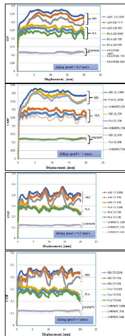
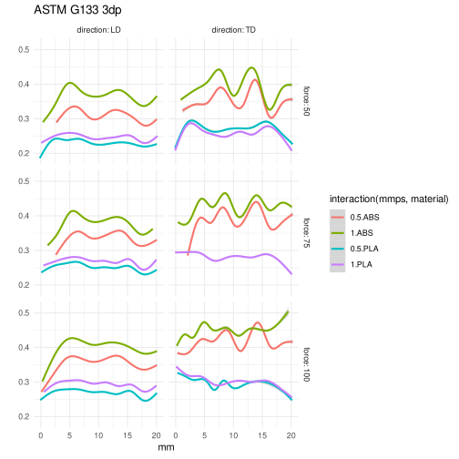

Often data is only available as a plot, and the goal is to replot or use it in a program. In the past I used engauge or webplotdigitizer for this task. This time I was frustrated with webplotdigitizer and decided to do it with GIMP.
aavogt/digitizer
I ended up using a rust xcf parser. I prompted copilot (gpt-5.2-codex) with types, and my requested names for image coordinates, plot coordinates, image layer that defines the plot area, as well as what the output csv should look like. It’s not a one-shot since rustc doesn’t accept it right away but only small changes were needed to compile main.rs. One mistake was that I ended up with one csv file for each layer instead of a single csv for everything. More importantly, the initial results were wrong mostly in the y coordinate. In computer graphics the origin in at the top left, but plots usually have an origin on the bottom left. I didn’t think of it right away. I chose to flip it at the end:
xf = (x-xmin) / (xmax-xmin);
yf = (y-ymin) / (ymax-ymin);
xplot = (x1 - x0) * xf + x0;
yplot = y1 - (y1 - y0) * yf;But that’s not quite the end: x,y in Layer::pixel(x,y) doesn’t use canvas coordinates, it uses layer coordinates. It turns out that PROP_OFFSETS has the [dx,dy] to recover canvas coordinates according to x_canvas = x_layer + dx.
The final code is here, which could be improved mostly in aesthetics. For example Option<()> might become bool and bounding_box() was written before I know about PROP_OFFSETS, so it might be simplified to ax.xmax = layer.pixels.width-1; ax.ymax = layer.pixels.height-1;.
Application
A print-in-place fifteen puzzle is my newest 3dp goal:

How does friction relate to extrusion line orientation, speed, pressure? I found ASTM G133 pin-on-plate results in this paper. I have trouble with the excel graphs because they have different scales. Here are their plots:

Using GIMP I take a couple minutes to select every colored region of the plot. Then digitizer outputs csvs that load with R/tidyverse/ggplot2. I replot ABS and PLA from their figure 7-10 below. With this arrangement, speed only matters for ABS in particular when moving in the longitudinal direction, the 100N-1mm/s-ABS run is different in a way that the averages over distances don’t show.

digitizer outputs the all of the y coordinates for each x. Above I collapsed them into a single line with geom_smooth but the way I’m using it, the wiggliness depends on my arbitrarily chosen image resolution, and here it may be too low.
Failed attempts
Haskell
First I tried to revive leino/xcf. Only small changes are needed build it with ghc-9.6.7: see here. But unfortunately my xcf files are version v011 and can’t be parsed as Version2 (v002).
Python
Next I tried with python.
First I tried with gimpformats from pypi, but it doesn’t load my image.
Instead I tried with Gimp’s api. Here’s how far I got:
# in b.py
import gi
import numpy as np
import ctypes
gi.require_version('Gimp', '3.0')
from gi.repository import Gimp
from gi.repository import Gio
from gi.repository import Gegl
run_mode = Gimp.RunMode.NONINTERACTIVE
image = Gimp.file_load(run_mode, Gio.file_new_for_path("long_0.5.xcf"))
layers = image.get_layers()
layer_dict = {}
for layer in layers:
name = layer.get_name()
width = layer.get_width()
height = layer.get_height()
buffer = layer.get_buffer()
data = buffer.get(Gegl.Rectangle.new(0, 0, width, height),
1.0,
"R'G'B'A u8",
Gegl.AUTO_ROWSTRIDE)
pixels = np.frombuffer(data, dtype=np.uint8).reshape(width, height, 4)
layer_dict[name] = pixels
# then find a rectangular layer with x0,x1,y0,y1
# then write the csv with header "name, xcanvas, ycanvas"
# for each pixel in the other layers that's not transparentI didn’t finish this. Gimp’s api is not fun. For example print(dir(layer.get_buffer())) prints:
['__class__', '__copy__', '__deepcopy__', '__delattr__', '__dict__', '__dir__',
'__doc__', '__eq__', '__firstlineno__', '__format__', '__gdoc__', '__ge__',
'__getattribute__', '__getstate__', '__gpointer__', '__grefcount__',
'__gsignals__', '__gt__', '__gtype__', '__hash__', '__info__', '__init__',
'__init_subclass__', '__le__', '__lt__', '__module__', '__ne__', '__new__',
'__reduce__', '__reduce_ex__', '__repr__', '__setattr__', '__sizeof__',
'__static_attributes__', '__str__', '__subclasshook__', '_force_floating',
'_ref', '_ref_sink', '_unref', '_unsupported_data_method',
'_unsupported_method', 'add_handler', 'bind_property', 'bind_property_full',
'chain', 'clear', 'command', 'compat_control', 'connect', 'connect_after',
'connect_data', 'connect_object', 'connect_object_after', 'copy',
'create_sub_buffer', 'damage_rect', 'damage_tile', 'disconnect',
'disconnect_by_func', 'do_dispose', 'dup', 'emit', 'emit_stop_by_name',
'find_property', 'flush', 'flush_ext', 'force_floating', 'freeze_changed',
'freeze_notify', 'g_type_instance', 'get', 'get_abyss', 'get_data',
'get_extent', 'get_properties', 'get_property', 'get_qdata', 'getv',
'handler_block', 'handler_block_by_func', 'handler_disconnect',
'handler_is_connected', 'handler_unblock', 'handler_unblock_by_func',
'install_properties', 'install_property', 'interface_find_property',
'interface_install_property', 'interface_list_properties', 'is_floating',
'linear_close', 'list_properties', 'load', 'lock', 'new', 'new_for_backend',
'newv', 'notify', 'notify_by_pspec', 'open', 'override_property', 'padding',
'parent_instance', 'priv', 'props', 'qdata', 'ref', 'ref_count', 'ref_sink',
'remove_handler', 'replace_data', 'replace_qdata', 'run_dispose',
'sample_cleanup', 'save', 'set', 'set_abyss', 'set_color',
'set_color_from_pixel', 'set_data', 'set_extent', 'set_pattern',
'set_properties', 'set_property', 'set_source', 'share_storage',
'signal_connect', 'source', 'steal_data', 'steal_qdata', 'stop_emission',
'stop_emission_by_name', 'swap_create_file', 'swap_has_file',
'swap_remove_file', 'thaw_changed', 'thaw_notify', 'unlock', 'unref',
'watch_closure', 'weak_ref']Which suggests we can have layer.get_buffer().get_data() but that’s an error:
File "/usr/lib/x86_64-linux-gnu/gimp/3.0/plug-ins/python-eval/python-eval.py", line 42, in code_eval
exec(code, globals())
~~~~^^^^^^^^^^^^^^^^^
File "<string>", line 1, in <module>
File "<string>", line 19, in <module>
File "/usr/lib/python3/dist-packages/gi/overrides/GObject.py", line 635, in _unsupported_data_method
raise RuntimeError(
"Data access methods are unsupported. Use normal Python attributes instead"
)So I try .data
AttributeError: 'Buffer' object has no attribute 'data'. Did you mean: 'qdata'?.qdata is some kind of glib array I didn’t look into. But GIMP’s API also has too much cleaning, where for example a simple way to get the numpy array that exists in Gimp 2 is gone in Gimp 3. I end up finding the .get method which is a binding to gegl_buffer_get, but the arguments are different, so I got it wrong at first:
batch command experienced a calling error:
Traceback (most recent call last):
File "/usr/lib/x86_64-linux-gnu/gimp/3.0/plug-ins/python-eval/python-eval.py", line 42, in code_eval
exec(code, globals())
~~~~^^^^^^^^^^^^^^^^^
File "<string>", line 1, in <module>
File "<string>", line 20, in <module>
TypeError: Must be string, not Object
Stopping at failing batch command [0]: exec(open("b.py").read())Which argument of .get is supposed to be a string and not an object? The error message doesn’t say. It’s the third one but I didn’t figure that out until I came back to document it today.
While a gimp plugin might be easiest to use. It might be possible to click on the plugin name and then be guided step-by-step instead of following instructions my rust digitizer prints out:
Prepare the XCF in GIMP:
- Open the plot image.
- Use Magic Wand or other tool to select each plot object, grow/shrink as needed,
then press Ctrl-Shift-L, Ctrl-Shift-N, PageDown. Repeat until all objects are gone.
- Select the plot area with the r (rectangle) tool, then press Ctrl-Shift-L, Ctrl-Shift-N
and name the new layer "x0,x1,y0,y1" (e.g. "0,100,20,40") or just "x1,y1" if x0 and y0 are 0,
- Rename each plot-object layer to the desired output CSV name column.
- Leave the original image in the bottom layer: it will be skipped